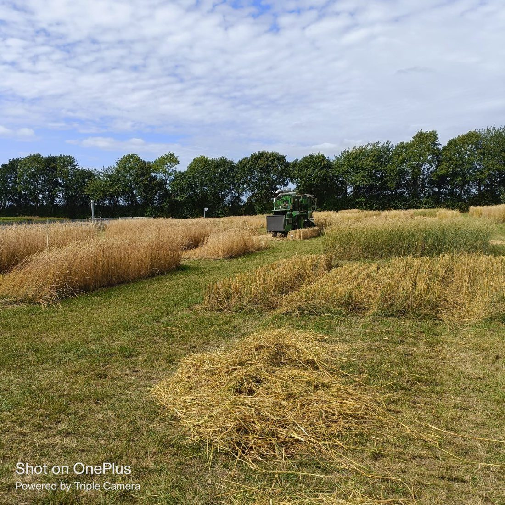

PerennialHybrids
Exploring GxExM Interactions of Perennial Grain Hybrids for Climate Resilient Agriculture
In this project we are comparing genotypes of perennial grain hybrids (e.g. perennial wheat) for their perenniality (e.g. regeneration) using metabolomics and plant phenotyping.
We have hired a PhD student with in-depth knowledge of genetics and plant phenotyping.
We are collaborating with the researchers from The Land Institute (the U.S) and Chinese Academy of Science (Shijiazhuang branch, China).

Partners
The Land Institute (USA)
Chinese Academy of Science, Shijiazhuang (China)